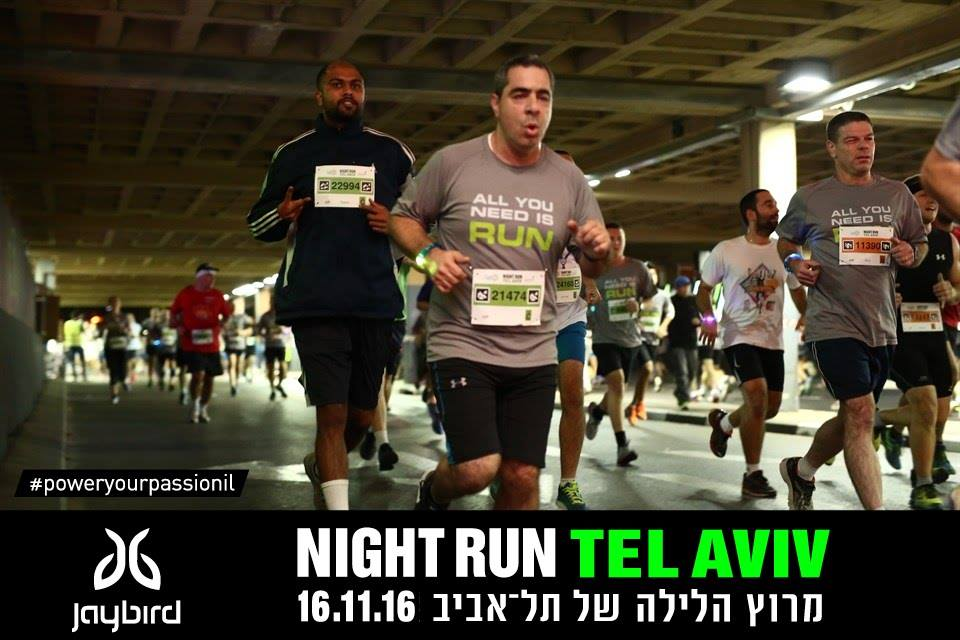

|  | 51:33 at Tel Aviv 10k Night Run on 16th November 2016 |
| This is row two, left side. | This is row two, right side. |
51:33 at Tel Aviv 10k Night Run on 16th November 2016
51:33 at Tel Aviv 10k Night Run on 16th November 2016
51:33 at Tel Aviv 10k Night Run on 16th November 2016
CMSC 858F - Algorithmic Game Theory (grad course) with Prof. MohammadTaghi Hajiaghayi, Spring 2014
CMSC 351 - Introduction to Algorithms with Dr. Hamid Mahini, Spring 2013
CMSC 351 - Introduction to Algorithms with Prof. MohammadTaghi Hajiaghayi, Spring 2012
CMSC 250 - Discrete Structures with Prof. William Gasarch, Spring 2011
CMSC 451 - Design and Analysis of Computer Algorithms with Prof. Clyde Kruskal, Fall 2010